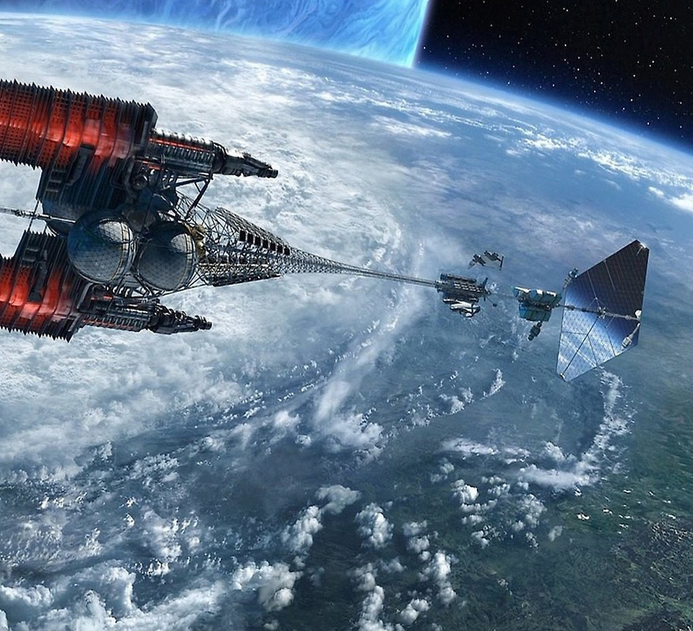

Информационные технологии в космосе

ИКТ играют уникальную роль в развитии гуманитарного пространства, потому что эта инфраструктурная технология позволяет эффективнее использовать другие технологии и возможности. Это означает, что применение ИКТ должно рассматриваться системно, но не по частям. ИКТ активно используются в космической отрасли, обеспечивая безопасность, эффективность и производительность, а также снижая стоимость работ и продукции.
×

Солнечный парус
В жизни современного общества технологии занимают значительное место. Важность технологического компонента современной цивилизации состоит в том, что именно он определяет во многом устойчивое развитие общества. Практически все процессы в обществе, так или иначе, происходят в сопровождении технологии. Ее влияние на социальные процессы приводит к существенным трансформациям последних. Так, стремительное развитие информационно-коммуникационных технологий служит ключевым фактором, определяющим ускоряющийся процесс информационной глобализации, которая становится характерным явлением настоящего времени.
Космические технологии в основном являются технологиями двойного назначения. Есть много примеров того, как они находили применение в гражданском секторе и переводили целые отрасли экономики на новые технологические рельсы.
Информационное общество есть объективное условие современного существования человека. Социальный контекст бытия современного человека создается его жизнедеятельностью, опосредованной применением современных технологий. Их роль в жизни как отдельного человека, так и общества в целом отмечена расширением спектра опосредования. Тотальное проникновение технического во все без исключения сферы жизни общества инициирует трансформацию устоявшихся социальных отношений, что предполагает и трансформацию самого типа социальности. Однако связь технического и социального носит не односторонний характер: существующий тип социальности также оказывает непосредственное воздействие на бытие технического. Это выражается в том, что общество задает социально приемлемые рамки функционирования технологий. Взаимосвязь технического и социального создает сложную, многоплановую проблему их соотношения.